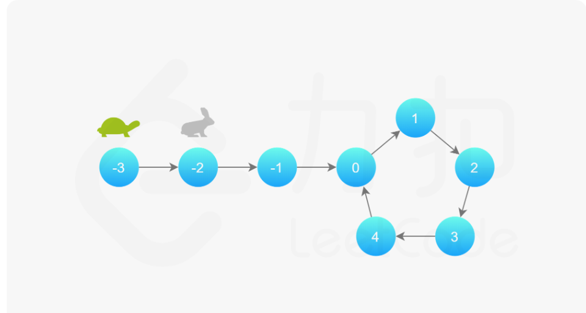
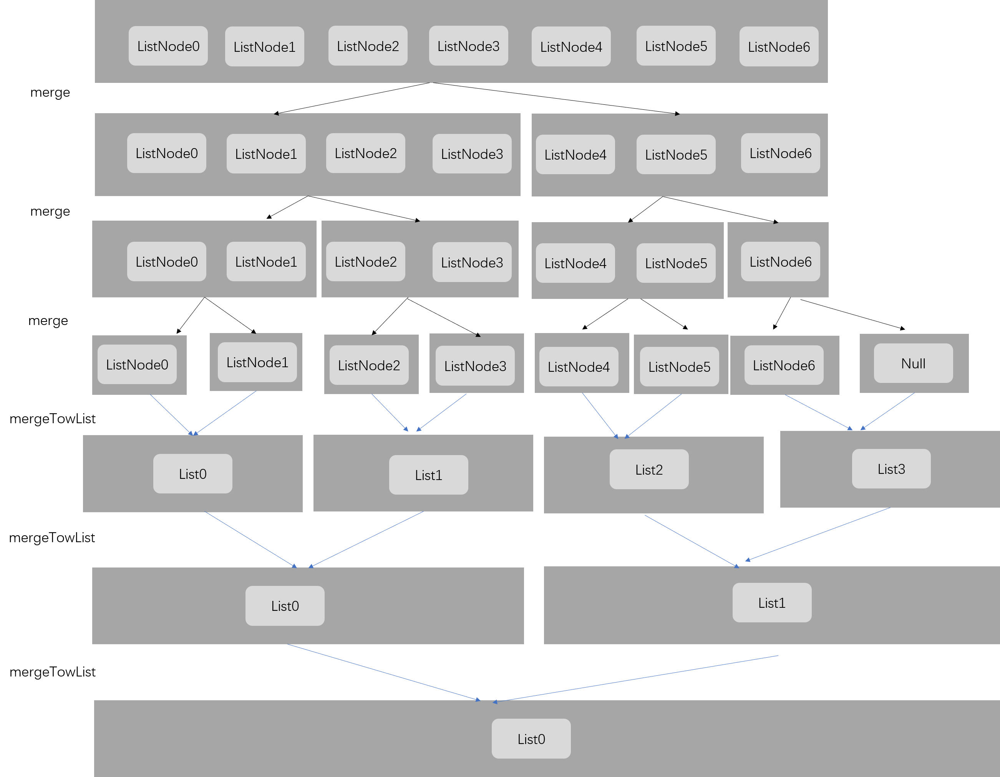
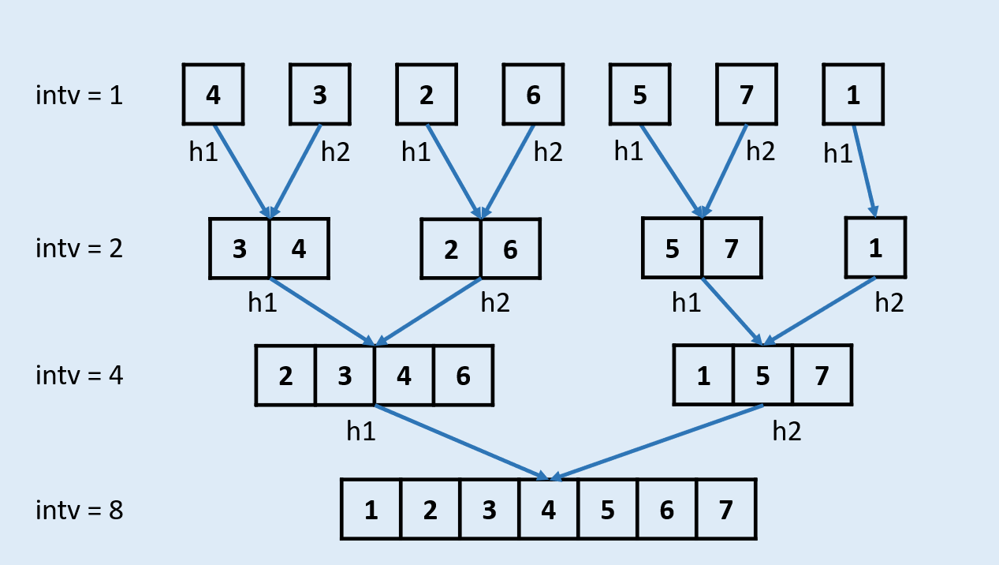
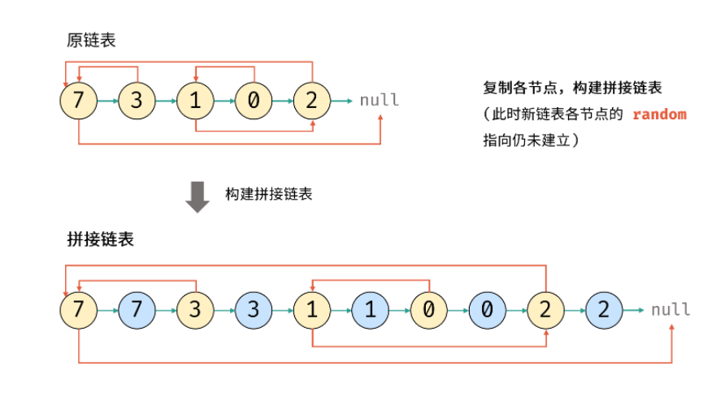

🏠Java LinkedList1. 链表反转2.判断链表是否有环3. 合并两个有序链表4.链表中的节点每K个一组翻转5.链表环中的入口结点6.删除链表的倒数第n个节点7.两个链表的第一个公共节点8.两个链表生成相加链表8.合并k个已经排序的链表9. 排序链表10.回文链表剑指 Offer 35. 复杂链表的复制剑指 Offer 22. 链表中倒数第k个节点剑指 Offer 06. 从尾到头打印链表剑指 Offer 18. 删除链表的节点面试题 02.03. 删除中间节点面试题 02.01. 移除重复节点面试题 03.06. 动物收容所面试题 02.04. 分割链表面试题 04.03. 特定深度节点链表
🏠
xxxxxxxxxximport java.util.Scanner; public class ScannerDemo { public static void main(String[] args) { Scanner scan = new Scanner(System.in); // 从键盘接收数据 // next方式接收字符串 System.out.println("next方式接收："); // 判断是否还有输入 if (scan.hasNext()) { String str1 = scan.next(); System.out.println("输入的数据为：" + str1); } scan.close(); }}Java LinkedList
| 方法 | 描述 |
|---|---|
| public boolean add(E e) | 链表末尾添加元素，返回是否成功，成功为 true，失败为 false。 |
| public void add(int index, E element) | 向指定位置插入元素。 |
| public boolean addAll(Collection c) | 将一个集合的所有元素添加到链表后面，返回是否成功，成功为 true，失败为 false。 |
| public boolean addAll(int index, Collection c) | 将一个集合的所有元素添加到链表的指定位置后面，返回是否成功，成功为 true，失败为 false。 |
| public void addFirst(E e) | 元素添加到头部。 |
| public void addLast(E e) | 元素添加到尾部。 |
| public boolean offer(E e) | 向链表末尾添加元素，返回是否成功，成功为 true，失败为 false。 |
| public boolean offerFirst(E e) | 头部插入元素，返回是否成功，成功为 true，失败为 false。 |
| public boolean offerLast(E e) | 尾部插入元素，返回是否成功，成功为 true，失败为 false。 |
| public void clear() | 清空链表。 |
| public E removeFirst() | 删除并返回第一个元素。 |
| public E removeLast() | 删除并返回最后一个元素。 |
| public boolean remove(Object o) | 删除某一元素，返回是否成功，成功为 true，失败为 false。 |
| public E remove(int index) | 删除指定位置的元素。 |
| public E poll() | 删除并返回第一个元素。 |
| public E remove() | 删除并返回第一个元素。 |
| public boolean contains(Object o) | 判断是否含有某一元素。 |
| public E get(int index) | 返回指定位置的元素。 |
| public E getFirst() | 返回第一个元素。 |
| public E getLast() | 返回最后一个元素。 |
| public int indexOf(Object o) | 查找指定元素从前往后第一次出现的索引。 |
| public int lastIndexOf(Object o) | 查找指定元素最后一次出现的索引。 |
| public E peek() | 返回第一个元素。 |
| public E element() | 返回第一个元素。 |
| public E peekFirst() | 返回头部元素。 |
| public E peekLast() | 返回尾部元素。 |
| public E set(int index, E element) | 设置指定位置的元素。 |
| public Object clone() | 克隆该列表。 |
| public Iterator descendingIterator() | 返回倒序迭代器。 |
| public int size() | 返回链表元素个数。 |
| public ListIterator listIterator(int index) | 返回从指定位置开始到末尾的迭代器。 |
| public Object[] toArray() | 返回一个由链表元素组成的数组。 |
| public T[] toArray(T[] a) | 返回一个由链表元素转换类型而成的数组。 |
return queue.toArray(new int[people.length][]);
1. 链表反转
输入一个链表，反转链表后，输出新链表的表头。
xxxxxxxxxx class ListNode { int val; ListNode next; ListNode(int x) { val = x; } }
//时间复杂度O(N) 需要遍历每个节点//空间复杂度O(1)public static ListNode ReverseList(ListNode head) { ListNode node=null; //先定义一个空节点 while(head!=null){ ListNode next=head.next; //保存下一个节点 head.next=node;//当前节点指向上一个节点 node=head;//作为下一轮反转的上一个节点 head=next;//继续往下走 } return node; }2.判断链表是否有环
判断给定的链表中是否有环。如果有环则返回true，否则返回false。
你能给出空间复杂度O(1)的解法么？

xxxxxxxxxx//时间复杂度O(N)//空间复杂度O(1)public boolean hasCycle(ListNode head) { if(head==null || head.next==null) return false; ListNode slow=head;//慢指针 ListNode fast=head.next;//快指针 while(fast!=null && fast.next!=null){ if(slow==fast) return true; slow=slow.next;//每次走一步 fast=fast.next.next;//每次走两步 } return false; }3. 合并两个有序链表
将两个有序的链表合并为一个新链表，要求新的链表是通过拼接两个链表的节点来生成的，且合并后新链表依然有序。
xxxxxxxxxx//时间复杂度：O(N+M)//空间夫复杂度：O(1) public ListNode mergeTwoLists(ListNode l1, ListNode l2) {
ListNode pre = new ListNode(0); ListNode head = pre; while(l1 != null && l2 != null){
if(l1.val < l2.val){
pre.next = l1; l1 = l1.next; } else{ pre.next = l2; l2 = l2.next; } pre = pre.next; }
if(l1 != null) pre.next = l1; if(l2 != null) pre.next = l2; return head.next;
}4.链表中的节点每K个一组翻转
xxxxxxxxxx//时间复杂度：O(N)//空间复杂度O(1)public ListNode reverseKGroup (ListNode head, int k) { // write code here ListNode hair=new ListNode(0);//伪头节点 hair.next=head; ListNode pre=hair; int i=0; while(head!=null && i<k){ if(i<k-1){ head=head.next; i++; } else if(i==k-1){ i=0; ListNode next=head.next; ListNode[] rev=reverse(pre.next,head);//每k个一组进行反转 pre.next=rev[0]; rev[1].next=next; head=next; pre=rev[1]; } } return hair.next; } public ListNode[] reverse (ListNode left,ListNode right){ ListNode pre=null; ListNode tail=left; ListNode temp=left; while(temp!=right){ ListNode next=temp.next; temp.next=pre; pre=temp; temp=next; } temp.next=pre; return new ListNode[]{temp, tail}; }5.链表环中的入口结点
对于一个给定的链表，返回环的入口节点，如果没有环，返回null
拓展：
你能给出不利用额外空间的解法么？

fast=a+b+c+b;
slow=a+b；
fast=slow*2;------>a=c
xxxxxxxxxx//时间复杂度O(N)//空间复杂度O(1)public ListNode detectCycle(ListNode head) { if(head==null || head.next==null) return null; ListNode slow=head; ListNode fast=head; while(fast!=null && fast.next!=null){ slow=slow.next; fast=fast.next.next; if(fast==slow){ fast=head; while(fast!=slow){ fast=fast.next; slow=slow.next; } return slow; } } return null; }6.删除链表的倒数第n个节点
xxxxxxxxxx//时间复杂度O(N)//空间复杂度O(1)public ListNode removeNthFromEnd (ListNode head, int n) { // write code here ListNode fast=head; ListNode slow=head; int i=0; while(i<n){//先让快指针往前走n步 fast=fast.next; i++; } if(fast==null) return head.next; while(fast.next!=null){ fast=fast.next; slow=slow.next; } slow.next=slow.next.next; return head; }7.两个链表的第一个公共节点
输入两个链表，找出它们的第一个公共结点。（注意因为传入数据是链表，所以错误测试数据的提示是用其他方式显示的，保证传入数据是正确的）
xxxxxxxxxx//将第一个链表的尾部和第二个链表的头部连起来，用一个指针遍历，将第二个链表的尾部和第一个链表的头部连起来，用另一个指针遍历，两个指针相遇，就是公共节点。//时间复杂度O(M+N) 空间复杂度O(1) public ListNode FindFirstCommonNode(ListNode pHead1, ListNode pHead2) { ListNode head1=pHead1; ListNode head2=pHead2; while(head1!=head2){//如果不相交，当二者都为null的时候相等 if(head1==null) head1=pHead2;//为什么head1.next==null会报错 else head1=head1.next; if(head2==null) head2=pHead1; else head2=head2.next; } return head1; }8.两个链表生成相加链表
假设链表中每一个节点的值都在 0 - 9 之间，那么链表整体就可以代表一个整数。
给定两个这种链表，请生成代表两个整数相加值的结果链表。
例如：链表 1 为 9->3->7，链表 2 为 6->3，最后生成新的结果链表为 1->0->0->0。
xxxxxxxxxx//思路：将两个链表反转之后相加//时间复杂度：反转链表O(M+N)+链表相加O(Max{M,n})public ListNode addInList (ListNode head1, ListNode head2) { // write code here ListNode node1=reverse(head1);//反转链表 ListNode node2=reverse(head2);//反转链表 ListNode head=new ListNode(0); ListNode pre=head; int carry=0; //链表相加 while(node1!=null || node2!=null || carry!=0){ int i=0; int j=0; if(node1!=null){ i=node1.val; node1=node1.next; } if(node2!=null){ j=node2.val; node2=node2.next; } int sum=i+j+carry; carry=sum/10; ListNode node=new ListNode(sum%10); head.next=node; head=node; } return reverse(pre.next);//反转相加后的链表 } //反转链表 public ListNode reverse(ListNode head){ ListNode pre=null; ListNode node =head; while(node!=null){ ListNode next=node.next; node.next=pre; pre=node; node=next; } return pre; }8.合并k个已经排序的链表

xxxxxxxxxx//时间复杂度计算:设有k组，链表最大长度为n//第一轮合并k/2组链表，每一组的代价为O(2n)，第二轮合并k/4组链表。每一组代价为O(4n)....//一共有logk轮，则复杂度为O(kn*logK)//递归会使用到O(logk)空间代价public ListNode mergeKLists(ArrayList<ListNode> lists) { return merge(lists,0, lists.size()-1); } public ListNode merge(ArrayList<ListNode> lists,int l,int r){ if(l==r) return lists.get(l); if(l>r ) return null; int mid=(l+r)/2; return mergeTwoList(merge(lists,l,mid),merge(lists,mid+1,r));//递归 } //合并两个链表 public ListNode mergeTwoList(ListNode l1,ListNode l2){ ListNode pre=new ListNode(0); ListNode head=pre; while(l1!=null && l2!=null){ if(l1.val<l2.val){ pre.next=l1; l1=l1.next; } else{ pre.next=l2; l2=l2.next; } pre=pre.next; } if(l1!=null) pre.next=l1; if(l2!=null) pre.next=l2; return head.next; }9. 排序链表
给你链表的头结点 head ，请将其按 升序 排列并返回 排序后的链表 。

xxxxxxxxxx//时间复杂度O(nlogn)//空间复杂度O(1)public ListNode sortList(ListNode head) {
ListNode pre=new ListNode(0); pre.next=head; ListNode hair=pre; int len=0;//先计算链表的长度 while(head!=null){
len++; head=head.next; }
for(int curlen=1;curlen<len;curlen<<=1){//每次合并长度为之前的二倍 ListNode curpre=pre; ListNode curhead=pre.next; while(curhead!=null){//遍历链表并合并 ListNode head1=curhead; for(int i=1;i<curlen && curhead!=null;i++){ curhead=curhead.next; } ListNode tail1=curhead;
if(curhead!=null){ curhead=curhead.next; tail1.next=null; } ListNode head2=curhead; for(int i=1;i<curlen && curhead!=null;i++){
curhead=curhead.next; } ListNode tail2=curhead; if(curhead!=null) { curhead=curhead.next; tail2.next=null; } ListNode mergehead=merge(head1,head2); curpre.next=mergehead; while(curpre.next!=null){
curpre=curpre.next; } curpre.next=curhead; } }
return pre.next; }//合并两个有序链表 public ListNode merge(ListNode head1,ListNode head2){
ListNode pre=new ListNode(0); ListNode head=pre; while(head1!=null && head2!=null){
if(head1.val>head2.val){
head.next=head2; head2=head2.next;
}else{
head.next=head1; head1=head1.next; } head=head.next; }
if(head1!=null) head.next=head1; if(head2!=null) head.next=head2; return pre.next; }10.回文链表
编写一个函数，检查输入的链表是否是回文的。
xxxxxxxxxx//使用快慢指针找到中点(奇数和偶数处理情况不一样)//反转后面的链表//判断两个链表是否相同//时间复杂度O(N) 空间复杂度O(1)public boolean isPalindrome(ListNode head) {
ListNode slow = head; ListNode fast = head; while(fast != null && fast.next !=null){//找到中间点
slow = slow.next; fast = fast.next.next;
} if(fast != null) slow = slow.next;//如果是奇数个，需要从下一个节点开始 ListNode cur = reverseListNode(slow);//反转后面的链表 while(cur != null){//比较反转后的链表是否相等
if(cur.val != head.val) return false; cur = cur.next; head = head.next; }
return true;
}
public ListNode reverseListNode(ListNode head){
ListNode pre = null; while(head != null){
ListNode next = head.next; head.next = pre; pre = head; head = next; }
return pre; }剑指 Offer 35. 复杂链表的复制
请实现 copyRandomList 函数，复制一个复杂链表。在复杂链表中，每个节点除了有一个 next 指针指向下一个节点，还有一个 random 指针指向链表中的任意节点或者 null。

xxxxxxxxxx/*方法一：使用hashmap存储原链表的node和复制的node之后通过递归的方式重建链表时间复杂度O(N)空间复杂度O(N)*/ HashMap<Node,Node> map = new HashMap<>();//前一个node是原链表的node,后面那个node是复制的 public Node copyRandomList(Node head) {
if(head == null) return head;
if(map.containsKey(head)){//如果node已经有了，直接返回就行
return map.get(head); }
Node node = new Node(head.val,null,null);//如果head的复制节点没有，就创建并放入map中 map.put(head,node);
node.next = copyRandomList(head.next);//创建或者获取node的next节点 node.random = copyRandomList(head.random);//创建或者获取node的random节点
return node; }
//方法2：首先先拼接链表，也就是原链表的每个节点的next为他的复制的节点//遍历拼接后的链表，根据原链表的random来获取复制节点的random//拆分链表//时间复杂度O(N)空间复杂度O(1) public Node copyRandomList(Node head) { if(head == null) return head; Node cur = head; while(cur != null){//拼接链表
Node node = new Node(cur.val); node.next = cur.next; cur.next = node; cur = node.next; }
cur = head; while(cur != null){//获取复制节点的random
if(cur.random != null){
cur.next.random = cur.random.next; }
cur = cur.next.next; }
cur = head; Node temp = head.next; Node res = temp; while(temp.next != null){//拆分链表
cur.next = cur.next.next; temp.next = temp.next.next; cur = cur.next; temp = temp.next;
}
cur.next = null; return res; }剑指 Offer 22. 链表中倒数第k个节点
输入一个链表，输出该链表中倒数第k个节点。为了符合大多数人的习惯，本题从1开始计数，即链表的尾节点是倒数第1个节点。
例如，一个链表有 6 个节点，从头节点开始，它们的值依次是 1、2、3、4、5、6。这个链表的倒数第 3 个节点是值为 4 的节点。
xxxxxxxxxx//设置一个前面的结点，先走k步//之后后面的结点和前面的结点一同走，直到前面的结点为空，这时候后面的结点走了n-k步，当前结点就是倒数第k个节点public ListNode getKthFromEnd(ListNode head, int k) { ListNode slow = head; while(k > 0){
head = head.next; k --; } while(head != null){
head = head.next; slow = slow.next; }
return slow;}剑指 Offer 06. 从尾到头打印链表
输入一个链表的头节点，从尾到头反过来返回每个节点的值（用数组返回）。
xxxxxxxxxx //使用栈来存放链表的数据//时间复杂度O(N)//空间复杂度O(N) Stack<Integer> s = new Stack<>(); public int[] reversePrint(ListNode head) {
while(head != null){
s.push(head.val); head = head.next; }
int size = s.size(); int []res = new int[size]; for(int i = 0; i < size; i++){ res[i] = s.pop(); } return res;
}剑指 Offer 18. 删除链表的节点
给定单向链表的头指针和一个要删除的节点的值，定义一个函数删除该节点。
返回删除后的链表的头节点。
xxxxxxxxxx//时间复杂度O(N)//空间复杂度O(N)public ListNode deleteNode(ListNode head, int val) {
if(head.val == val) return head.next;//如果要删除的元素是头节点，直接返回下一个元素
ListNode cur = head.next; ListNode pre = head;
while(cur != null && cur.val != val){//循环找到目标节点
cur = cur.next; pre = pre.next; }
if(cur != null) pre.next = cur.next;//如果不为空，就删除
return head;
}面试题 02.03. 删除中间节点
xxxxxxxxxx//当前节点的值等于下一个节点的值，并把下一个节点删除。public void deleteNode(ListNode node) {
ListNode next = node.next; node.val = next.val; node.next = next.next; }面试题 02.01. 移除重复节点
编写代码，移除未排序链表中的重复节点。保留最开始出现的节点
xxxxxxxxxx//时间复杂度O(N)//空间复杂度O(N)//使用hashset添加节点，遇到重复节点就删除public ListNode removeDuplicateNodes(ListNode head) {
if(head == null || head.next == null) return head; Set<Integer> set = new HashSet<>(); ListNode res = head; ListNode cur = head.next; set.add(head.val);
while(cur != null){
while(cur != null && !set.add(cur.val)){
cur = cur.next; }
head.next = cur; head = cur; if(cur != null) cur = head.next; }
return res;
}面试题 03.06. 动物收容所
动物收容所。有家动物收容所只收容狗与猫，且严格遵守“先进先出”的原则。在收养该收容所的动物时，收养人只能收养所有动物中“最老”（由其进入收容所的时间长短而定）的动物，或者可以挑选猫或狗（同时必须收养此类动物中“最老”的）。换言之，收养人不能自由挑选想收养的对象。请创建适用于这个系统的数据结构，实现各种操作方法，比如enqueue、dequeueAny、dequeueDog和dequeueCat。允许使用Java内置的LinkedList数据结构。
enqueue方法有一个animal参数，animal[0]代表动物编号，animal[1]代表动物种类，其中 0 代表猫，1 代表狗。
dequeue*方法返回一个列表[动物编号, 动物种类]，若没有可以收养的动物，则返回[-1,-1]。
xxxxxxxxxx/*1.使用LinkedList存储数据，空间复杂度O(N)2.移除任意一种动物，直接移除LinkedList的第一个元素即可。时间复杂度O(1)3.移除猫/狗，遍历链表，获取第一个为猫/狗的动物。时间复杂度O(N)*/class AnimalShelf {
LinkedList<int[]> animalList; public AnimalShelf() {
animalList = new LinkedList<>();
} public void enqueue(int[] animal) {
animalList.add(animal);
} public int[] dequeueAny() {
if(animalList.size() != 0){
int [] temp = animalList.getFirst(); return animalList.remove(animalList.indexOf(temp));
} return new int[]{-1,-1};
} public int[] dequeueDog() {
for(int i = 0; i < animalList.size();i++){
if(animalList.get(i)[1] == 1){
return animalList.remove(i); } }
return new int[]{-1,-1};
} public int[] dequeueCat() {
for(int i = 0; i < animalList.size();i++){
if(animalList.get(i)[1] == 0){
return animalList.remove(i); } }
return new int[]{-1,-1};
}}
/** * Your AnimalShelf object will be instantiated and called as such: * AnimalShelf obj = new AnimalShelf(); * obj.enqueue(animal); * int[] param_2 = obj.dequeueAny(); * int[] param_3 = obj.dequeueDog(); * int[] param_4 = obj.dequeueCat(); */面试题 02.04. 分割链表
编写程序以 x 为基准分割链表，使得所有小于 x 的节点排在大于或等于 x 的节点之前。如果链表中包含 x，x 只需出现在小于 x 的元素之后(如下所示)。分割元素 x 只需处于“右半部分”即可，其不需要被置于左右两部分之间。
xxxxxxxxxx/*将链表分为大于等于x的和小于x的两个链表最后将两个链表拼接时间复杂度O(N)空间复杂度O(1)*/public ListNode partition(ListNode head, int x) {
ListNode small = new ListNode(0); ListNode head1 = small; ListNode large = new ListNode(0); ListNode head2 = large; ListNode cur = head; while(cur != null){
if(cur.val < x){
small.next = cur; small = small.next; }else{
large.next = cur; large = large.next;
}
cur = cur.next; }
large.next = null; small.next = head2.next; return head1.next; }面试题 04.03. 特定深度节点链表
给定一棵二叉树，设计一个算法，创建含有某一深度上所有节点的链表（比如，若一棵树的深度为 D，则会创建出 D 个链表）。返回一个包含所有深度的链表的数组。
xxxxxxxxxx//时间复杂度O(N)//空间复杂度O(N)public ListNode[] listOfDepth(TreeNode tree) {
if(tree == null) return new ListNode[0]; Queue<TreeNode> q = new LinkedList<>(); List<ListNode> list = new ArrayList<>(); q.add(tree);
while(!q.isEmpty()){
int size = q.size(); ListNode head = new ListNode(0); ListNode pre = head; for(int i = 0; i < size;i++){
TreeNode node = q.poll(); if(i == 0) head.val = node.val; else { head.next = new ListNode(node.val); head = head.next; } if(node.left != null) q.add(node.left); if(node.right != null) q.add(node.right); }
list.add(pre); }
ListNode []res = new ListNode[list.size()]; return list.toArray(res);
}